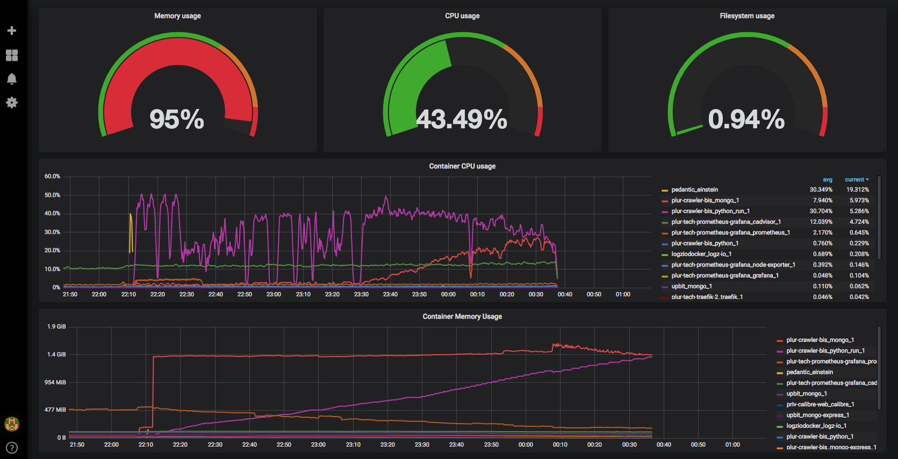
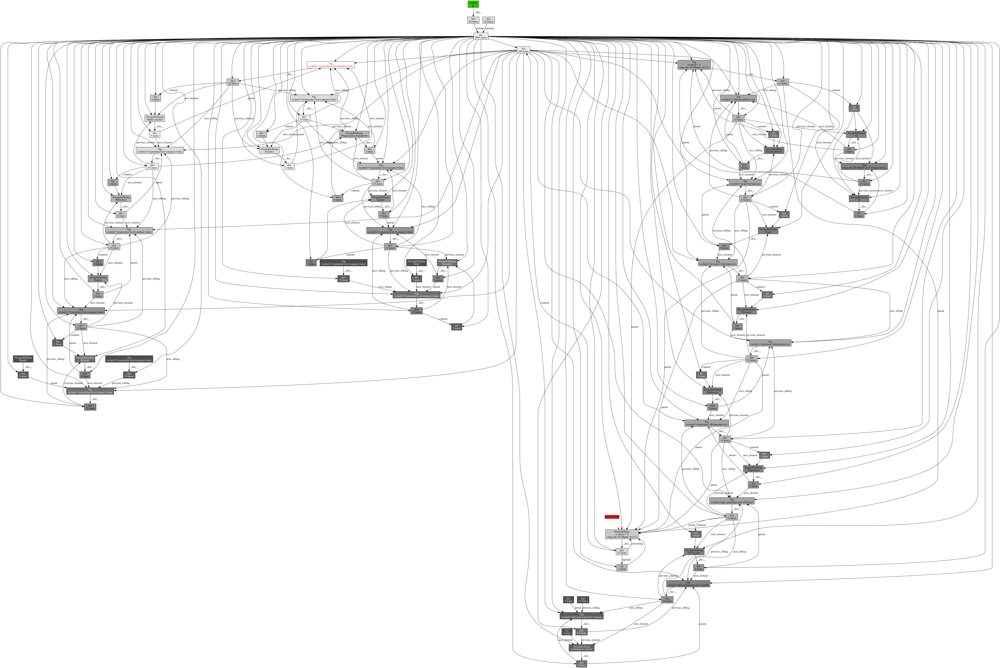
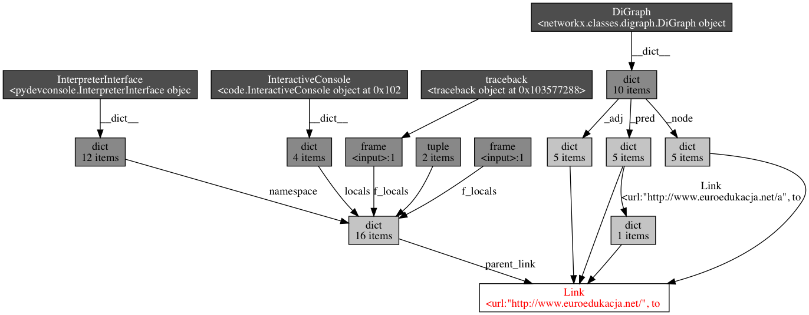
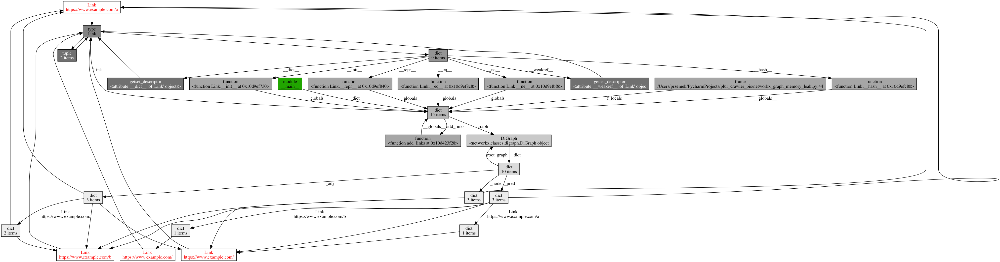
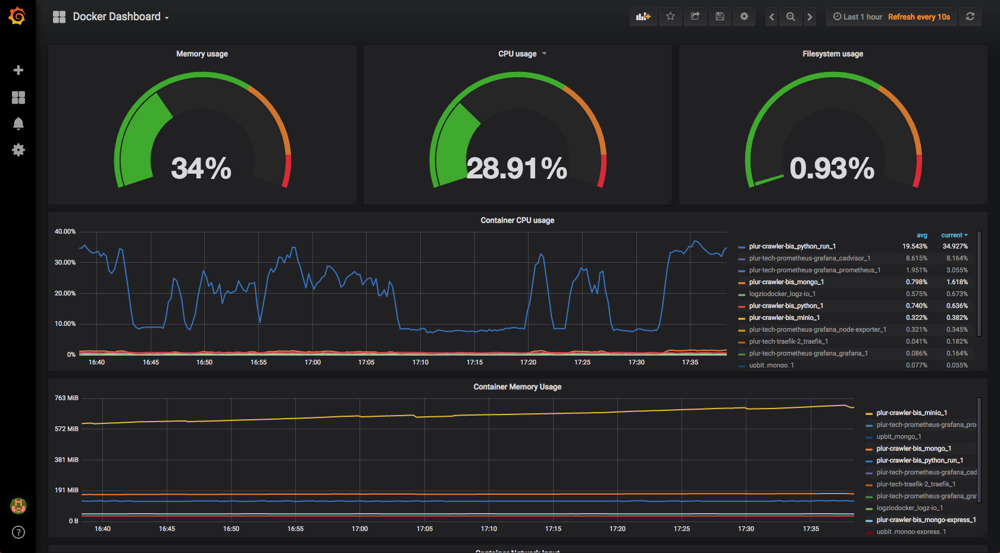

Analyzing memory usage in Python 🐍 - case study
- Posted By Przemysław Łada
- Mon 16 July 2018
- python, memoryleak, memory_profiler, pympler, objgraph, BeautifulSoup, networkx
Recently I've bumped into unusual situation of too much RAM usage in our python app. It was one of long running tasks which started to use more and more memory. It wasn't a problem till we used it with very heavy assignment. It effected with crush because of memory shortage (python interpreter used more then 2 GiB). Below, you can see what I saw in our Grafana dashboard: 
{kind=link}
First move was to carefully check code in search of obvious mistakes. Couple of optimizations was done but it didn't fix main problem. So I stepped into unknown territory of analyzing and profiling memory usage in Python.
Measure memory usage: memory_profiler
First tool I recommend is package called memory_profiler(homepage). You can get it with
pip install memory_profiler
and you can easily use it simply decorating your function with @profile decorator. Example script looks like this:
from io import BytesIO
from memory_profiler import profile
fp = open('memory_profiler.log', 'w+')
@profile(stream=fp)
def my_func():
data = b'a' * 1024 * 1024 * 5 # 5 MB of data
buffer = BytesIO(data)
del data
return buffer
if __name__ == '__main__':
my_func()
If you run this code you will get result like this in your log file
Line # Mem usage Increment Line Contents
================================================
8 11.7 MiB 11.7 MiB @profile(stream=fp)
9 def my_func():
10 17.7 MiB 6.0 MiB data = b'a' * 1024 * 1024 * 5 # 5 MB of data
11 17.7 MiB 0.0 MiB buffer = BytesIO(data)
12 17.7 MiB 0.0 MiB del data
13 17.7 MiB 0.0 MiB return buffer
How to use memory_profiler with generators
Some methods in our app, suspected of being responsible for memory leak are generators. I had some problems decorating generator method with @profile decorator (there were no result given back). I read that generators are supported by memory_profiler library but I didn't found solution how to make it work.
As suggested in this stackoverflow answer I've put before and after memory_profiler.memory_usage() method and measure memory footprint of every iteration generator produced.
Actual size of python object: pympler
pympler (homapage) is another great tool to measure and monitor memory behavior of python app. It have many interesting functionalities like Muppy which can identify if objects are leaked out of a scope between two reference points. In my case I used only great pympler.asizeof to investigate how much memory NetworkX graphs and my other object were actually using. In contrast to sys.getsizeof from python standard library it sizes objects recursively and can work out of the box on objects not being basic types like lists, strings or floats
from pympler import asizeof
print('Size of graph:', sizeof_fmt(asizeof.asizeof(networkx_graph)))
Logs similar to this one helped verify actual size of objects during program execution.
Tracking references with objgraph
Python have garbage collector so problems with memory leaks usually comes from some not removed object references. Great objgraph is a tool which makes tracking those references an easy task. It can then present them in form of graphviz graphs.
First functionality worth mentioning of objgraph I used, was objgraph.show_most_common_types() this great feature provides quick overview of the objects in memory in form like this:
function 15585
dict 11811
tuple 6603
list 6182
weakref 3387
type 1992
getset_descriptor 1819
builtin_function_or_method 1416
Tag 1381
NavigableString 1348
Using memory_profiler we manage to find section of code generating big memory usage. I used objgraph.show_most_common_types(limit=10) on this sections and logged usage on couple of program iterations. This way I found out what kind of objects were appearing in memory and where still residing there even after forced garbage collector action.
In this specific example it was BeautifulSoups Tag and NavigableString class objects.
Ok, so now we know that something is wrong with removing Tag objects from memory by garbage collector. So we can use objgraph ability to show object back-references.
# get arbitrary Tag class object
obj = objgraph.by_type('Tag')[1000]
objgraph.show_backrefs(obj, max_depth=10, filename='sample-backref-graph.png')
this method can produce graph like this:
 with our Tag object colored in red. This graph is quite detailed, complex and overwhelming but you can read all references from it. This graphs usually can look much simpler. More like this:

So you can easily get information about back-references from it.
{kind=link}
{kind=link}
Memory leak connected with BeautifulSoup
In this specific example we fell into well known BeautifulSoup trap. In our app we were parsing some html and giving back url to images:
soup = BeautifulSoup(html_content, "html.parser")
for img in soup.find_all('img', src=True):
yield generate_link(base_url, img['src'])
As you can see we are making BeautifulSoup object by parsing html_content. This part is quite memory consuming (depends of html size but it can be even 1-4 MiB of memory). Then we find all images and return links. Everything should end up well, and after method execution python garbage collector should remove BeautifulSoup object from memory because there is no more references to it. But that is known issues that expressions like this: img['src'] returns results of type NavigableString instead of str. NavigableStrings still have references to Tag object and because of that whole parsed by BeautifulSoup html page is still in memory even after method ends.
On StackOverflow I found great hint and easy solution:
Simply transform img['src'] to string by str(img['src']). This way you transform NavigableString into standard string and loose all unnecessary references and garbage collector can work as assumed.
NetworkX graph memory leak
Our app during work is building graph representing connections between web pages. We are using python library called NetworkX. After profiling memory usage I saw that graph was getting bigger and bigger even when no new nodes or edges were created.
In NetworkX you can represent edges by any kind of object. Also custom made, but for it to work you have to implement __hash__ method:
class Link:
def __init__(self, url: str, to_parse: bool=False):
self.url = url
self.to_parse = to_parse
def __eq__(self, other):
if isinstance(other, Link):
return self.url == other.url
return False
def __ne__(self, other):
return not self.__eq__(other)
def __hash__(self):
return hash(self.url)
and then if you try to make something like this:
import networkx as nx
link1 = Link('https://www.example.com/')
link2 = Link('https://www.example.com/')
graph = nx.DiGraph()
graph.add_node(link1)
graph.add_node(link2)
there will be only one node in graph. And everything is fine. But lets analyze another case:
import networkx as nx
import objgraph
graph = nx.DiGraph()
def add_links(graph):
parent1 = Link('https://www.example.com/')
graph.add_node(parent1)
link1 = Link('https://www.example.com/a')
graph.add_node(link1)
graph.add_edge(parent1, link1)
parent2 = Link('https://www.example.com/')
# parent2 returns same hash as parent1
link2 = Link('https://www.example.com/b')
graph.add_edge(parent2, link2)
add_links(graph)
objgraph.show_backrefs(objgraph.by_type('Link'), max_depth=10, filename='graph-back-refs.png')
At the end there will be 3 nodes and 2 edge in the graph because objects parent1 and parent2 return same hash. But after using objgraph I found out that there is reference from graph to parent1 but also to parent2. Line objgraph.show_backrefs(objgraph.by_type('Link'), max_depth=10, filename='graph-back-refs.png') give this graph as result (as you can see there is 4 Link objects not 3 referenced by DiGraph:

{kind=link}
It was memory leak because garbage collector was unable to remove objects like parent2 after function add_links() ended. Solution was to check if there already was edge in graph before creating one.
Summary
This way we manage to find and fix memory leaks in our application. We reduced memory usage from ~2.5 GiB to 138 MiB. And our Grafana reported it this way: 
{kind=link}
List of useful links
Big thanks to authors of all this articles and libraries. We recommend to read all of them if you have problems with memory leaks in your python programs.
- If you are not familiar with the way python garbage collector works, we strongly recommend this articles:
- Great Case study from Benoit Bernard: Tracking Down a Freaky Python Memory Leak
- Diagnosing Memory “Leaks” in Python by Chase Seibert
- memory_profiler official page
- Plot memory usage as a function of time
- 7 tips to Time Python scripts and control Memory & CPU usage
- ObjGraph - Python Object Graphs Documentation
- Pympler documentation